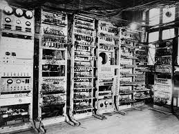

After leaving the code breaking job, Turing found another in which he would design computers.

After the war was over, Alan Turing was recruited
by the NPL (National Physical Labratory) to create an electronic
computer. He designed a computer that was digital and vastly
superior to all the others at the time, known as the Automatic Computing
Engine. His colleagues thought the engineering was too complicated, so
they designed a smaller version called the "Pilot Model Ace"(See Picture 1).
He then took up a job at the Computing Machine Laboratory at the University of Manchester
as a director. There he worked on theoretical ideas and designed computers, (See Picture 2).
Then, he designed the first programming manual and his programming system was used
in the Ferranti Mark 1 Computer. (See Picture 3).